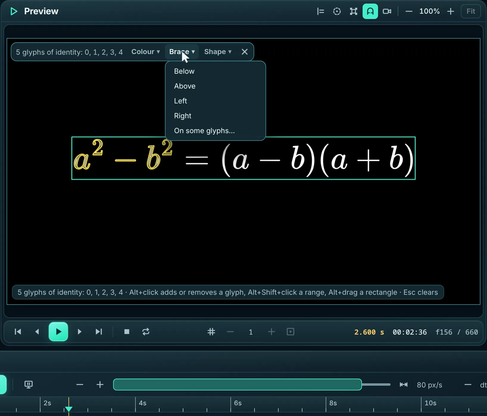
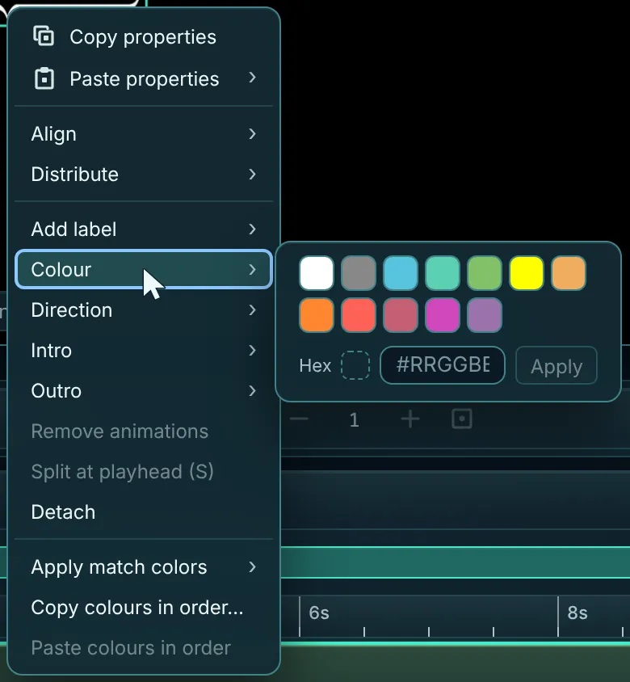
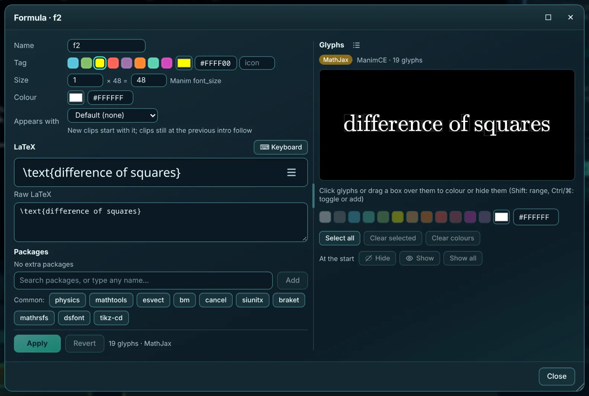
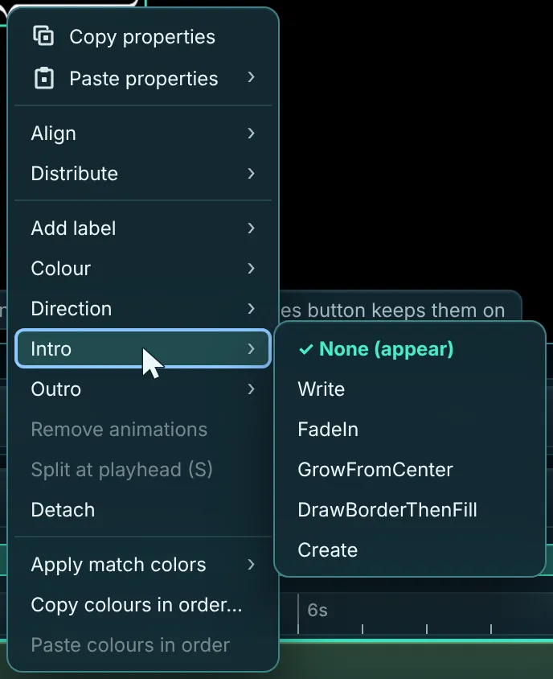
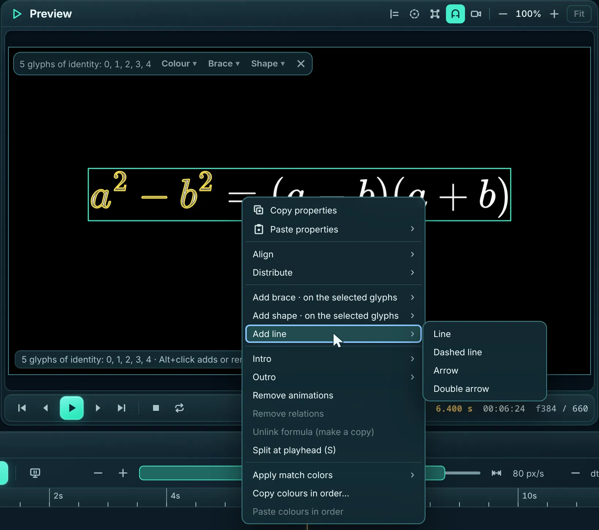
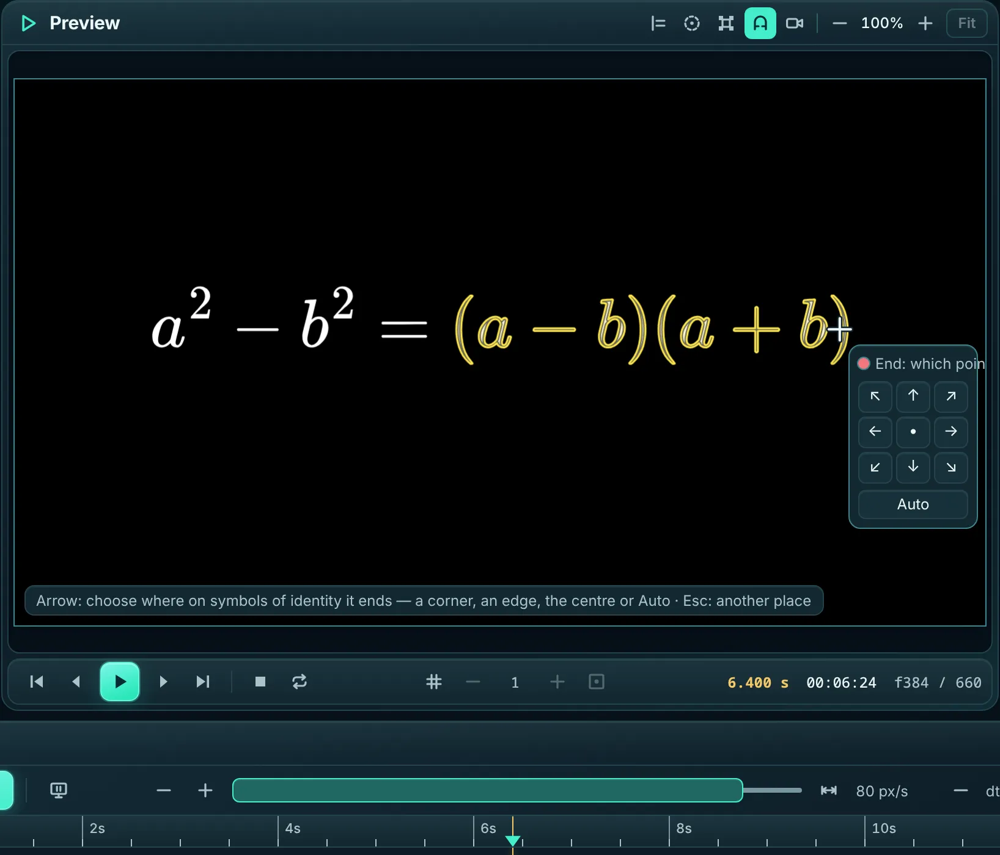
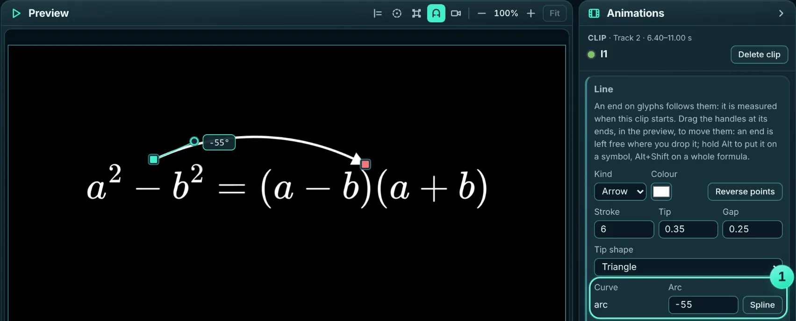
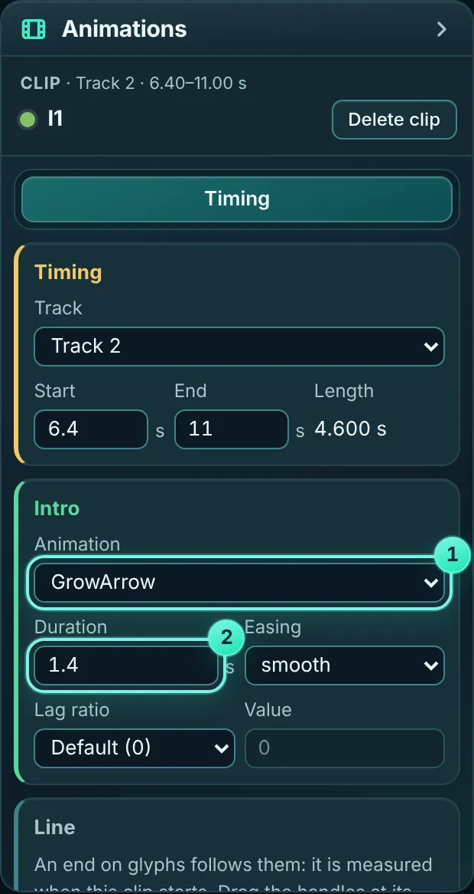

An identity with braces and arrows
An identity is easier to follow when the picture says what its parts are. You will take a² − b² = (a − b)(a + b) and put a labelled brace under each side and an arrow that arcs from one side to the other, then play it and export it.
What you will make
An eleven-second scene. The identity writes itself in; a blue brace grows under the left side and its label fades in; a green brace and its label follow under the right side; last, an arrow is drawn over the equals sign from the left side to the right one.
This is the same scene as ManimCE renders it from the Python the editor exports:
Along the way you meet the Alt pick of glyphs, the brace of the glyph bar, a label typed in the editor, the compass of an arrow, an arc and GrowArrow.
Before you start
You need the basics of the Preview and of the timeline, and to have added a formula to a project once (Your first animation). Download the starting project and open it: choose File ▸ Open…, press Other file… in the Projects dialog and pick the downloaded file (Opening a project). It holds the identity on the timeline, written in over 1.8 seconds, and nothing else.
The identity has sixteen glyphs. The left side is the first five (a, 2, −, b, 2), then comes the equals sign, and the right side is the last ten, from the first parenthesis to the last.
Step by step
1. A brace under the left side
Click the ruler of the timeline to put the playhead at about 2.6 s (the time is read beside the transport buttons): the brace will start where the playhead is. In the Preview, Alt+click the first glyph of the left side, then Alt+Shift+click its last: the five glyphs are picked. The bar at the corner of the Preview says so. Open Brace ▾ and choose Below.

The brace has its own clip on a track above the identity's, from 2.6 s to the end. Braces has all the ways to add one.
2. Colour it
Right-click the brace. Colour ▸ offers the Manim colours as swatches: choose the blue one (its tooltip says BLUE).

3. Give it a label
Right-click the brace again and choose Add label ▸ Formula. An empty formula hangs at the brace's tip and its editor opens. Click the Raw LaTeX box, type \text{difference of squares}, press Apply and close the editor.

4. Make it grow
Right-click the brace once more. Intro ▸ gives it the animation its clip starts with: choose GrowFromCenter. The label fades in with the brace.

5. The same on the right
Move the playhead to 4.4 s. Alt+click the first parenthesis of the right side and Alt+Shift+click the last. Choose Brace ▾ ▸ Below, then in its menu Colour ▸ the green swatch, a label \text{a product} and Intro ▸ GrowFromCenter.
6. An arrow over the equals sign
Move the playhead to 6.4 s. Pick the whole left side again, as in step 1. Right-click the equals sign, which is not picked: the menu of the clip opens. Choose Add line ▸ Arrow. The arrow starts on the glyphs you picked, and a compass asks where on them: choose the top edge, the arrow pointing up.
Now say where it ends. Hold Alt and drag a rectangle over the ten glyphs of the right side: the end goes on all of them. The compass asks again: choose the top edge.


The compass and the other ways to move an end are in Lines and arrows.
7. Bend it
Right-click the arrow and choose Curve ▸ Arc. In the Line section of the Animations panel (the Timing tab) set Arc to −55. A negative number bulges an arrow that points right upwards.

8. Draw it in
In the Intro section choose the animation GrowArrow and make it 1.4 seconds long. An arrow that is bent is drawn along its curve, with its tip on the end of what is drawn.

9. Play it
Press Space, or go to the start with Home and play. The braces grow at 2.6 and 4.4 seconds and the arrow is drawn at 6.4. Everything stays to the end at 11 seconds. If a label starts at the wrong time, drag its clip on the timeline, or type its Start in the panel.
10. Export it
Export ▸ Python — ManimCE… gives the scene as a .py file, and Export ▸ Video… renders a video (Exporting). The player above and the video were made from the finished project that you can download in the card.
The result
The Python of the finished scene, for ManimCE and ManimGL:
A few lines tell the story. The two braces are built on the glyphs they hang on and their labels are put at their tips; the arrow is built between the top of the left side and the top of the right side, bent by path_arc, and drawn in with the editor's own trace animation because it is bent.
Make it your own
- Give the arrow a Transform that moves its end onto the two factors one after the other (Moving the ends with a Transform).
- Put a box round the right side and carry it to the left one with Transform to another formula or glyphs….
- Colour the glyphs the labels talk about (Colouring glyphs and objects).